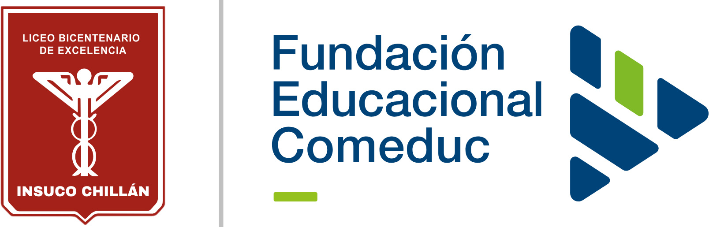
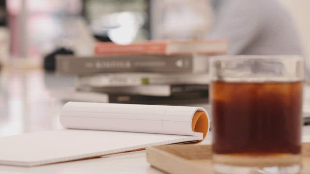

La sobrecarga
Cuando se juntan las pruebas y los trabajos, ¿alcanzamos a entender lo que estudiamos o solo buscamos entregar todo a tiempo?

UN ENSAYO SOBRE APRENDER Y VIVIR
Pasamos buena parte del día estudiando.
¿Nos queda tiempo para pensar en lo que aprendemos?

LA VIDA ENTRE ENTREGAS
Entre las clases, los viajes, las tareas y las pruebas, el día se nos hace corto. Por eso vale la pena preguntarnos si tantas horas nos ayudan a aprender o si muchas veces solo estamos tratando de cumplir.
También hay horas que se pierden por cómo están organizados los horarios. Ese tiempo podría servir para estudiar con más calma, descansar o hacer otras cosas que nos importan.
Cuando se juntan las pruebas y los trabajos, ¿alcanzamos a entender lo que estudiamos o solo buscamos entregar todo a tiempo?
¿Cuánto tiempo pasamos esperando entre una actividad y otra? ¿Se podrían organizar mejor los horarios?
¿Estudiamos para trabajar en lo que nos gusta, para aprender a pensar por nuestra cuenta o para las dos cosas?
CINCO MIRADAS, UNA INQUIETUD
Tomamos algunas ideas de estos cinco pensadores y las relacionamos con lo que vivimos al estudiar. A partir de eso, proponemos preguntas para conversar.
PONER LAS IDEAS EN TENSIÓN
¿Qué pasa si miramos el mismo problema desde estas dos ideas?
Kant nos ayuda a pensar que aprender también necesita esfuerzo y ciertos hábitos. Tener reglas puede servir para que después sepamos decidir por nuestra cuenta.
Han nos lleva a mirar el otro lado. Querer hacerlo todo bien puede terminar en una presión que nunca se acaba, incluso cuando ya necesitamos descansar.
¿Dónde pondrías tú el límite?
¿Todo tiene que servir para trabajar? Hay contenidos que quizás se repiten y podrían revisarse. Pero también hay cosas que nos ayudan a entender el mundo, aunque no las usemos directamente en un trabajo. Con Aristóteles podemos pensar en ese valor.
¿Se podrían acortar algunas carreras? Antes habría que revisar qué se enseña, qué se repite y cuánto tiempo necesitan las prácticas. La idea sería aprovechar mejor los años sin dejar fuera lo que hace falta para ejercer bien.
AHORA, TU ARGUMENTO
¿Con qué idea estás de acuerdo? ¿Cuál no te convence? Explica por qué y piensa también qué podría responder alguien que opina distinto.
No basta con elegir un lado.

Proyecto de filosofía · Educación media y universitaria en Chile.
Joaquín Verdejo
Daniel Vergara
Alejandro Gutiérrez
Francisco Morales